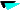
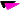
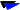

Looking for tickets for the palio horse race? contact us at: siena@ilpalio.org  The history of the Palio of Siena A little background Time schedules (in English) Useful information on how to get to Siena  Winning contradas since 1633 Victories, contrada by contrada Total Palios won by each contrada Summary sheets of participants, Palio by Palio From 1900 to the present Contradas that have run in the Palio since the XVII Century Non-traditional Palios and special Palios Total number of Palios run by each contrada Number of years that a contrada has not won Number of Palios lost after last victory Various curiosities Contradas which were unable to participate on the day of the race since 1900 Winners from among the contradas that were extracted Riderless contrada winners Days of the week on which the Palio's were won Last victory for July, August and special Palios 16 double victories in July and August of the same year, by year Winning contradas in July and August, by year Who ran when... and won The same 10 contradas that ran together in different races Who came in second The rivalries Frequency of position at starting line since 1900 Last time in each of the ten starting positions Starting line-up The starter's names Captains of the winning contradas Heads of contradas since 1894 Contrada Officiers from 1693 to 1939 Contrada Officiers Women participants in the Palio Winning jockeys Jockeys' personal information and sometimes their photo Dates of birth of over 300 jockeys Other statistics about jockeys Court cases and curiousities regarding jokeys Jockeys' falls Those who were only in the trials from 1888 Jockeys' double victories in July and August of the same year, by year Jockeys that have raced since 2000 The first contrada for which a jockey rode Families with more than one Palio's jockey  Winning horses in the 1900's Horses photo Horses that ran for the first time and won, since 1900 Horses' double victories in July and August of the same year, by year Horses to same contrada more than once Owners of winning horses Race circuit times since 1950 Several news articles of the races from the 1600's Painters of Palio banners since 1900 The Palio banners conserved in the contradas' museums Winners of the "Masgalani" prize Books about the Palio Special additional books produced by the winning contradas Anedoctes and contrada members stories Sonnets from 19th Century Contrada hymns Postcards of contrada Pages Miscellaneous Links of contradas and Sienese web sites Simulation game of the Palio Access to web pages in Italian siena@ilpalio.org
 The history of the Palio of Siena A little background Time schedules (in English) Useful information on how to get to Siena


